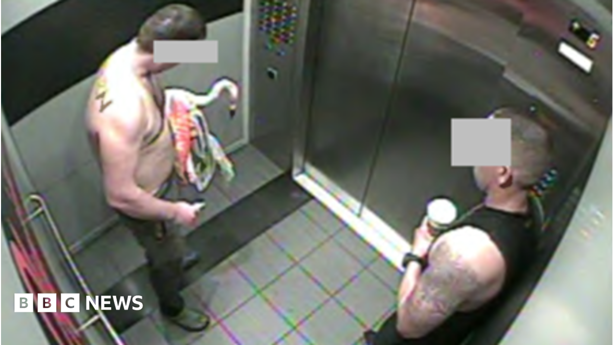

World · 22 Oct 2026
Tourist found guilty after stealing Las Vegas flamingo from enclosure

The man testified that he snatched Peachy from its enclosure at the Flamingo hotel and casino after drinking 30 to 40 beers, but did not mean any harm.
Multiple independent publishers are reporting on the same development: Tourist found guilty after stealing Las Vegas flamingo from enclosure.
The available reports place the development in the World category. The accounts were compared for agreement on the central event rather than simply shared names or broad topics.
One of the available reports describes the development this way: The man testified that he snatched Peachy from its enclosure at the Flamingo hotel and casino after drinking 30 to 40 beers, but did not mean any harm.
Readers should consult the linked source reports for additional context, updates and details that may change as the story develops.
Sources
This article was produced by the C. O. Eric AI Newsroom from the cited sources. It is published only after automated evidence and safety checks.